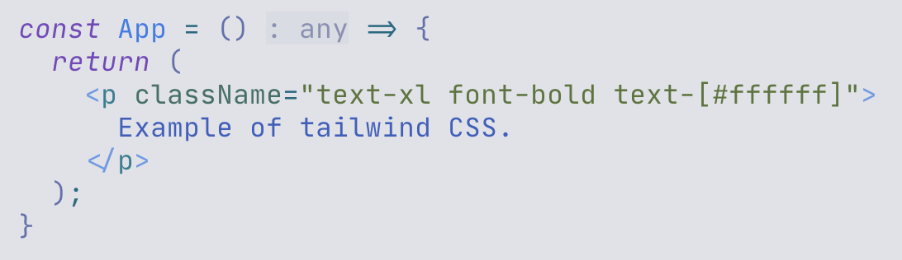
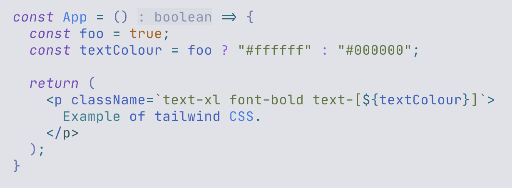
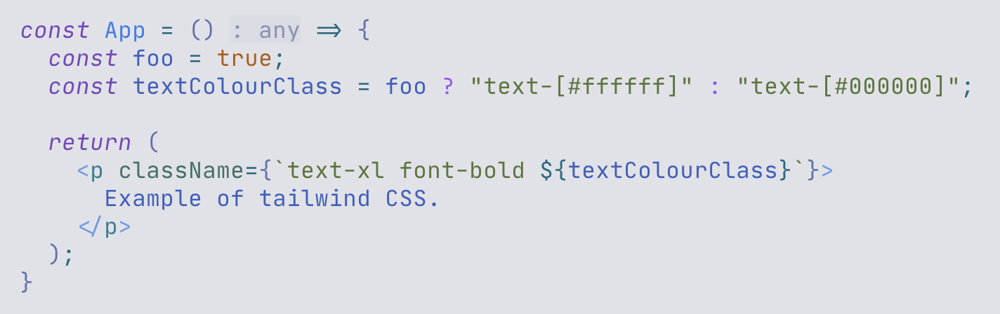

와플스튜디오에서의 세 달을 보냈다. '스누인턴'이라는 서비스를 클론코딩하는 과제를 받았고, 약 두 달 동안 이 과제를 수행했다. 이 과정에서 있었던 어려운 일과 이를 해결한 과정을 적어본다.
스누인턴 클론코딩 프로젝트를 진행하는 과정에서, 스타일을 설정하기 위해 테일윈드 CSS를 사용하였다. JSX 코드에 클레스 이름을 적음으로써 스타일을 설정할 수 있다. 이를테면 다음과 같다.

p 태그의 클래스 이름을 살펴보자. text-xl, font-bold, text-[#ffffff] 세 가지의 요소가 있다. 각각 텍스트의 크기(XL 크기), 텍스트의 굵기(볼드체), 텍스트의 색상(흰색)을 의미한다. 이런 식으로 필요한 요소를 모두 조합하여 클래스 이름을 작성하면, 자동으로 스타일이 적용되는 것이다.
그런데 아래와 같은 경우 색상이 설정대로 적용되지 않는다는 사실을 깨달았다.

진리값을 저장하는 변수 foo가 있다고 하자. 그리고 foo의 값에 따라 다른 색상 텍스트를 담는 변수 textColour가 있다고 하자. 그리고 클래스 이름에 textColour를 넣으면 foo의 값에 따라 텍스트의 색상이 달라질 것 같다. 그러나 실제로는 그렇지 않다. foo의 값이 무엇이든 관계없이 텍스트가 항상 검은색으로 나타날 것이다.
테일윈드 CSS에서는 동적 스타일링을 지원하지 않기 때문에 이런 문제가 발생한 것이다!
그 이유는 바로 테일윈드가 런타임이 아닌 빌드 타임에 코드를 스캔하기 때문이다.
간단히 말해, 테일윈드는 브라우저에서 코드가 실행될 때 어떤 클래스가 필요한지 계산하는 것이 아니라, 파일을 저장하고 빌드할 때 텍스트 파일 전체를 읽어서 필요한 CSS만 미리 만들어 낸다.
테일윈드 컴파일러의 작동 원리는 다음과 같다.
우선 빌드 타임에 소스 코드를 텍스트로 읽는다.
그런 다음 정규식을 사용해 클래스 이름처럼 보이는 문자열을 찾는다.
이렇게 찾은 클래스 이름에 해당하는 CSS만을 미리 생성해 둔다.
따라서 완전한 문자열로 적혀 있지 않은 클래스는 인식하지 못하고, 최종 CSS 파일에서 제외해 버린다.
위에서 예로 든 코드에서는 text-[#ffffff]도, text-[#000000]도 없으니 당연히 색상 스타일링도 적용될 수 없었던 것이다.
완전한 문자열을 스캔한다는 원리를 이해하면, 다음과 같이 조건에 따라 다른 스타일링을 구현할 수 있다.

textColourClass 변수에 클래스 이름이 완전한 문자열로 포함되어 있으므로, 테일윈드 엔진은 소스 코드를 스캔하며 text-[#ffffff]와 text-[#000000]에 해당하는 스타일을 미리 생성하게 된다. 이렇게 생성된 스타일은 런타임에 p 태그의 텍스트에 결합되며 텍스트의 색상이 foo의 값에 따라 정상적으로 반영되는 것이다.